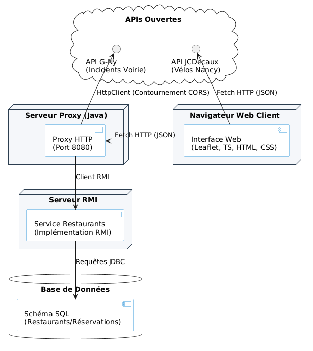

Compte Rendu du Projet - SAE Application Répartie
Architecture de l'application
L'application respecte une architecture répartie complète, combinant Web, Proxy HTTP, RMI et Base de données :
- Front-end (Client) : HTML/CSS et TypeScript avec Leaflet.js. Transpilé avec
esbuild. - Back-end (Proxy Java) : Serveur HTTP (
com.sun.net.httpserver) gérant le contournement CORS et faisant le pont entre le client web et les services distants. - APIs Ouvertes : JCDecaux (vélos) interrogé par le client Web. Métropole du Grand Nancy (incidents) interrogé par le Proxy Java (
HttpClient). - Serveur RMI & BDD : Service Java distant accédant à une base de données via JDBC pour gérer les restaurants et réservations. Le Proxy agit comme client RMI.

Ce qui a été fait
- Front-end : Mise en place de la carte interactive Leaflet avec un code TypeScript modulaire (Data, Map, App).
- Open Data (Vélos) : Récupération, fusion des données GBFS et affichage avec des icônes dynamiques de disponibilité.
- Open Data (Incidents) : Création d'un Proxy HTTP en Java pour interroger l'API bloquée par CORS et l'exposer au client.
- Service RMI (Restaurants) : Développement d'un serveur RMI interrogeant une base de données SQL pour récupérer la liste des restaurants (Nom, adresse, GPS).
- Fonction Réservation : Implémentation d'une méthode RMI permettant de réserver une table (Nom, nb convives, téléphone).
- Passerelle JSON : Connexion du Proxy Java au serveur RMI pour exposer les données des restaurants au format JSON exploitable par la carte Leaflet.
- Build & Gestion : Utilisation de Maven pour gérer les dépendances Java et npm pour le TypeScript.
Manuel d'utilisation
Prérequis : Java 17+ et Maven installés.
Ouvrir 2 terminaux depuis la racine du projet et lancer les commandes dans cet ordre :
1. Importer la base de données
Importer le contenu du fichier sql/script.sql dans SQLDeveloper.
2. Serveur RMI (Terminal 1)
Créer un fichier config.properties dans rmi/rmi-restaurant/ en se basant sur le fichier .example. Puis, lancer le serveur :
cd rmi/rmi-restaurant
mvn clean install
mvn exec:java
mvn clean install
mvn exec:java
Le serveur affiche Service Restaurant pret. et reste actif. Ne pas fermer ce terminal.
3. Proxy Java (Terminal 2)
Lancer le serveur HTTP intermédiaire :
cd proxy-java
mvn clean compile
mvn exec:java
mvn clean compile
mvn exec:java
Le proxy se lance sur http://localhost:8080.
Arrêter les serveurs
Faire Ctrl+C dans chaque terminal.
Dépôt Git
Retrouvez l'intégralité du code source (Java et Web) structuré de manière professionnelle sur notre dépôt Git :
Accéder au dépôt GitHub